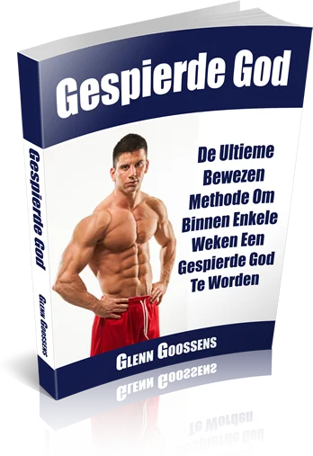

AbonnementBekijk plan
AbonnementBekijk plan
Bewegen
Happy with Yoga
€ 2,88 per week
Voor wie: Je wilt thuis rustig bewegen, ook als beginner
Bekijk de lessen ↗#ad · affiliate-link Wat je krijgt en waar je op letBewegen helpt bij afvallen én om sterk te blijven, op elke leeftijd. Ben je de vijftig voorbij? Dan zijn spieroefeningen extra belangrijk, omdat je makkelijker spierkracht verliest.
Bekijk de plannen ↓
Dit zijn de Beweegrichtlijnen van de Gezondheidsraad.

Vul je gewicht en lengte in. Je ziet wat een gezond gewicht is bij jouw lengte, en wat een haalbaar eerste doel is.
Op basis van het Voedingscentrum. BMI is een richtlijn: spieren en lichaamsbouw tellen ook mee. Ben je 70 of ouder, dan rekenen we met een gezonde BMI van 22 tot 28. Niet bedoeld voor jongeren onder de 18 of tijdens een zwangerschap.
Bij elk plan lees je wat je krijgt en waar je op let.
Je kiest bij de aanbieder. Via onze links krijgen wij een kleine vergoeding (#ad), jij betaalt niets extra.
AbonnementBekijk plan
Voor wie: Je wilt thuis rustig bewegen, ook als beginner
Bekijk de lessen ↗#ad · affiliate-link Wat je krijgt en waar je op let EenmaligBekijk plan
EenmaligBekijk plan
Voor wie: Je wilt stap voor stap yoga leren, eenmalig betalen
Bekijk de cursus ↗#ad · affiliate-link Wat je krijgt en waar je op let EenmaligBekijk plan
EenmaligBekijk plan
Voor wie: Je zoekt zachte beweging en ontspanning
Bekijk het pakket ↗#ad · affiliate-link Wat je krijgt en waar je op let
EenmaligBekijk planVoor wie: Je wilt spieren opbouwen en sterker worden
Bekijk het e-book ↗#ad · affiliate-link Wat je krijgt en waar je op let
Een plan voor 7 dagen, een boodschappenlijst om af te vinken en 3 makkelijke recepten.
Open de startgids → Gewoon afvallen
Gewoon afvallen  Recepten
Recepten